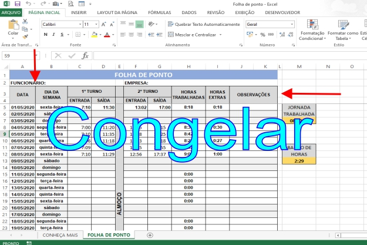
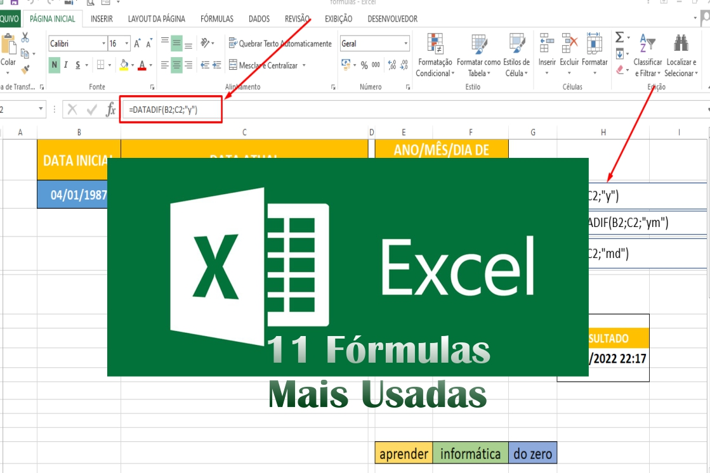

Minicursos de Informática
Hoje em dia, você não precisa se locomover da sua casa até uma instituição para fazer algum curso de informática ou quaisquer curso que seja.
Com o avanço da tecnologia, hoje você pode se profissionalizar sem sair de casa.
Hoje, independentemente da área que você queira se profissionalizar, a informática é indispensável.Então, nós da plataforma Informática do Zero, estamos levando até você, vários cursos que envolve a tecnologia, ou seja, que qualquer pessoa precisa para ficar mais preparado para seu primeiro emprego.

Descubra como Congelar Linhas e Colunas no Excel..

11 FÓRMULAS Mais UTILIZADAS no EXCEL

Aprenda como congelar colunas e linhas no excel
This example use media queries to re-arrange the images on different screen sizes: for screens larger than 700px wide, it will show four images side by side, for screens smaller than 700px, it will show two images side by side.